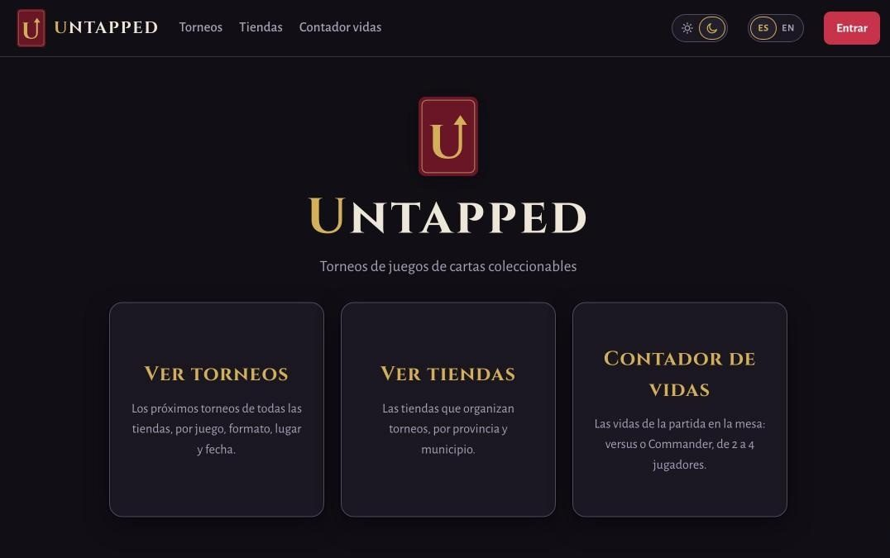

Guía de Untapped: de la primera ronda a la clasificación final
Untapped es la plataforma de Asmodevs para llevar torneos de juegos de cartas: la tienda apunta a los jugadores, lanza cada ronda con sus emparejamientos y apunta los resultados; los jugadores lo siguen en directo desde el móvil. Elige tu camino.

untapped.esPara jugadores
No necesitas cuenta: solo las tiendas tienen una. La tienda te apunta a cada torneo con tu nombre y tú lo sigues desde cualquier navegador.
1.1Buscar torneos
En Torneos ves los próximos torneos de todas las tiendas, agrupados por día y los más cercanos primero.
- Elige el juego y, después, el formato (el formato se activa al elegir juego).
- Filtra por provincia y municipio, o pulsa el icono de diana para buscar cerca de ti.
- Con el filtro Liga decides si incluir los torneos que forman parte de una liga.
- Escribe parte del nombre si lo conoces: no importan tildes ni mayúsculas.
- Toca un día del calendario para ver otra fecha, y pulsa la lupa para buscar. El embudo tachado borra los filtros.
Cada tarjeta dice la hora, el estado (por empezar, En juego: ronda X de Y o Terminado), la tienda, el formato y la liga si la tiene.
1.2Seguir un torneo en directo
Si la tienda lo publica, cada torneo tiene su propia página, que se actualiza mientras se juega. Pide el enlace a la tienda o búscalo en su calendario.
- Cabecera
- Juego, formato, fecha, número de rondas, minutos por ronda y tipo de puntuación.
- Estado
- Por empezar, en juego (ronda actual) o terminado.
- Reloj
- El tiempo que le queda a la ronda en juego.
- Compartir
- Copia o envía el enlace del torneo.
- Rondas
- Dónde juegas, en qué mesa y contra quién en cada ronda, con los resultados ya apuntados.
1.3Entender la clasificación
En los torneos 1 contra 1 (Modern, Pauper, Standard…) se juega por sistema suizo: cada ronda te empareja con alguien de tus mismos puntos al que no te hayas enfrentado. Victoria 3 puntos, empate 1, derrota 0.
- V-D-E
- Victorias, derrotas y empates de enfrentamientos. «(1 bye)» si una ronda no tuviste rival: cuenta como victoria 2-0.
- OMW%
- Media del porcentaje de victorias de tus rivales. Desempata primero: mejor cuanto más fuertes han sido.
- GW%
- Tu porcentaje de partidas ganadas.
- OGW%
- Porcentaje de partidas ganadas de tus rivales.
Siguen las normas de torneo de Magic: ningún porcentaje baja del 33 %, y el bye no cuenta en los desempates de tus rivales. Si te retiras, sales como «(retirado, ronda X)».
1.4Mesas multijugador (Commander y cEDH)
En los formatos multijugador las rondas se juegan en mesas de 3 o 4 con un asiento para cada jugador. Cada ronda da puntos por puesto; con la puntuación EDH estándar: 4, 3, 2 y 1.
- Rondas
- Cuántas rondas has jugado.
- BH
- Buchholz: la media de puntos de los rivales con los que has jugado. Desempata a quien tiene los mismos puntos.
El corazón de cada mesa abre el contador de vidas con los nombres de sus jugadores y el reloj de la ronda.
1.5Tiendas y su calendario
En Tiendas están todas las tiendas que organizan torneos, filtrables por provincia, municipio o nombre, o cerca de ti.
- Entra en la ficha de una tienda para ver su dirección, el botón de mapa y el de compartir.
- Su calendario semanal muestra sus torneos; cambia de semana con las flechas o salta a una fecha con el icono de calendario.
- Debajo tienes la lista de torneos de esa semana; toca uno para abrirlo.
1.6Ligas
Una liga agrupa varios torneos de un mismo juego y formato durante unas semanas o meses. Cada torneo de la liga da puntos de liga según las reglas de la tienda.
La página de la liga muestra las fechas, la tienda, la clasificación (puntos y torneos jugados; con los mismos puntos se comparte posición) y la lista de sus torneos. Llegas a ella desde el enlace «Liga:» de cualquiera de sus torneos.
Contador de vidas
Gratis y sin cuenta. La partida se guarda en tu navegador: si recargas, sigue donde la dejaste.
C.1Jugar una partida
- Abre Contador vidas en el menú. Por defecto es un versus a 20 vidas, con el panel de arriba girado para el rival.
- Toca + o − en el panel de cada jugador para sumar o restar vidas.
- La etiqueta Empieza marca a quien abre la partida, elegido por la ruleta.
- Los botones del centro: reiniciar, configurar, dados y pantalla completa.
C.2Configurar, Commander y dados
- Modo
- Versus o Commander. En Commander eliges 2, 3 o 4 jugadores.
- Vidas
- 20, 30, 40, 60 u otra cifra.
- Veneno
- Activa el contador de veneno en cada panel.
- Comandante
- Los chips de colores de cada panel son el daño de comandante recibido de cada rival; al tocarlo se abre y lo que sumes también resta vidas.
- Dados
- D4, D6, D8, D10, D12, D20, D100 y moneda. Pulsa la pantalla negra para lanzar.
C.3Idioma, tema y ayuda
Arriba a la derecha cambias entre tema claro y oscuro y entre español e inglés. En el pie de página tienes Contacto, Preguntas frecuentes y los textos legales.
Para tiendas
Todo lo que necesita una tienda para llevar sus torneos: desde pedir la cuenta hasta publicar la clasificación final.
2.1Pedir una cuenta de tienda
Las cuentas son solo por invitación, así que no hay página de registro. Pueden pedirla tiendas y organizadores de torneos de cartas en España.
- Ve a Contacto (o «Pedir una cuenta de tienda» en Preguntas frecuentes).
- Deja marcada la opción Una cuenta de tienda.
- Rellena tu nombre, tu email, el nombre de la tienda, la provincia y el municipio. El mensaje es opcional.
- Pulsa Enviar. Leemos cada solicitud y, si encaja, te llega una invitación por email.
2.2El email de invitación
Si se aprueba, recibes un email «Te han invitado».
- Pulsa Crear mi cuenta (o copia el enlace en el navegador si el botón no funciona).
- Elige el nombre de tu tienda y una contraseña.
- Ya puedes entrar y crear tu primer torneo.
2.3Entrar y recuperar la contraseña
- Pulsa Entrar arriba a la derecha y escribe el email y la contraseña de tu tienda.
- Al entrar aparecen en el menú Mis torneos, Mis ligas y tu imagen, que lleva a Mi cuenta.
- ¿La olvidaste? Pulsa ¿Has olvidado tu contraseña?, escribe tu email y te llega un enlace para elegir otra. Caduca a los 30 minutos; si no llega, mira en spam.
2.4Configurar Mi cuenta
Lo que pongas aquí es lo que ven los jugadores en el listado de tiendas, en tu ficha y en tus torneos.
- Imagen
- Tu logo o una foto (JPEG, PNG o WebP) y un color de fondo. Sin imagen salen tus iniciales.
- Nombre
- Si lo cambias, cambia también la dirección de tu página pública.
- Dónde estáis
- Provincia, municipio, dirección y código postal.
- Encontraros
- Web, redes sociales (Instagram, Facebook, X, TikTok, YouTube, Twitch, Discord, Telegram, WhatsApp) y tu tienda en marketplaces de cartas como Cardmarket.
- Abajo
- La llave cambia la contraseña (cierra tus otras sesiones); la papelera elimina la cuenta para siempre, tras escribir el nombre de la tienda. Pulsa Guardar para aplicar los cambios. El email no se puede cambiar.
2.5Mis torneos
Tu panel de trabajo. Arriba está tu plan con los torneos usados en cada uno de los próximos meses (un torneo cuenta en el mes en que empieza, publicado o no).
Debajo, los filtros: juego, formato, estado (sin empezar, en juego, terminado), liga, publicación, nombre y fecha. Toca un torneo para gestionarlo, o pulsa Nuevo torneo.
2.6Crear un torneo
- Elige el juego: Magic, Pokémon, Lorcana, One Piece, Riftbound, Yu-Gi-Oh!, El Señor de los Anillos o Star Wars: Unlimited.
- Elige el formato; puedes escribir para filtrar la lista.
- Escribe el nombre y, si quieres, una descripción (precio, premios…) y un enlace para pagar online en la web de tu tienda.
- Elige la fecha y hora en el calendario y pulsa Listo.
- Ajusta rondas, minutos por ronda (activa el reloj) y partidas: al mejor de 1 o de 3.
- Opcional en Magic: el código de Companion de tu evento en EventLink (4 a 12 letras y cifras).
- Pulsa Crear torneo. Nace sin empezar y sin publicar: solo lo ves tú.
2.7Apuntar a los jugadores
- Escribe el nombre en Nombre del jugador y pulsa Enter o +. El cursor se queda en el campo para el siguiente.
- No se permiten nombres repetidos (sin distinguir mayúsculas), y como máximo 60 caracteres.
- ¿Muchos jugadores? Abre Añadir varios desde un archivo CSV: descarga la plantilla, rellénala en Excel o Google Sheets (un nombre por fila) y súbela.
- Con el lápiz corriges un nombre; con la papelera lo quitas antes de empezar.
2.8Lanzar la ronda
- Pulsa el play rojo junto a «Rondas» y confirma Lanzar ronda 1. Hacen falta al menos 2 jugadores.
- Untapped empareja al azar la primera ronda y numera las mesas. Si son impares, uno recibe un bye (gana la ronda 2-0).
- Arranca el reloj de la ronda con los minutos que elegiste; lo ven también los jugadores.
- Con la impresora de Rondas imprimes los emparejamientos para colgarlos; con la de Clasificación, la clasificación.
2.9Apuntar resultados
- Pulsa el icono de portapapeles de una mesa.
- Escribe las partidas ganadas por cada jugador y las empatadas. Tab pasa al siguiente campo; Enter guarda.
- La clasificación se recalcula al instante. Para corregir, pulsa el lápiz de la mesa.
- Al mejor de 3
- 2-0, 2-1, 1-1-1 (empate)… Se rechaza lo imposible, como 3-0 o 2-2.
- Al mejor de 1
- 1-0 o 0-1.
- Empate pactado
- Apúntalo como 0-0-3.
2.10Siguientes rondas y clasificación
Con la ronda completa, vuelve a pulsar el play rojo. A partir de la segunda, Untapped empareja por sistema suizo: cada jugador con otro de sus mismos puntos, sin repetir rival; si un grupo de puntos es impar, alguien baja al grupo siguiente. El bye va al peor clasificado que aún no lo ha tenido.
Las pestañas «Ronda 1 ✓, Ronda 2…» te dejan revisar cualquier ronda. La clasificación usa OMW%, GW% y OGW% como desempates (los explicamos en la parte de jugadores).
2.11Retirar o reactivar a un jugador
- Con el torneo empezado, la papelera del jugador pasa a ser Retirar.
- Si ya ha jugado la ronda en curso, apunta antes su resultado: si no, la pierde.
- Queda fuera de las siguientes rondas y sale en la clasificación como «(retirado, ronda X)».
- Si vuelve, pulsa la flecha de Reactivar.
2.12Torneos de Commander
En los formatos multijugador Untapped reparte a los jugadores en mesas de 3 o 4 con asiento asignado.
- Pulsa el portapapeles de la mesa: aparece un selector de puesto para cada jugador (1.º 4 pts, 2.º 3 pts…).
- Si la partida acaba en empate, marca a los supervivientes como Vivo en el empate (con antistalling, 1 punto cada uno); los eliminados conservan su puesto.
- Cada jugador ocupa un puesto distinto; si no, Untapped te avisa.
- Quien se retira durante la ronda queda como primer eliminado.
La clasificación muestra puntos, rondas jugadas y BH (Buchholz) para desempatar.
2.13Publicar y compartir
- Pulsa el ojo para publicar. Mientras está «Sin publicar», solo lo ves tú.
- Publicado, aparece en tu ficha de tienda y en el calendario de torneos, con sus rondas y su clasificación en directo.
- El icono de enlace externo abre la página pública: cópiala y compártela con tus jugadores.
- El ojo tachado lo despublica. El lápiz edita los datos; con el torneo empezado ya no se pueden cambiar formato, fecha, rondas ni partidas.
2.14Finalizar el torneo
Tras la última ronda, pulsa la bandera roja y confirma. La clasificación queda como está y ya no se puede cambiar nada.
2.15Mis ligas
Una liga agrupa torneos de un juego y formato durante unos días o meses. Sus jugadores se dan de alta una vez en la liga y se eligen en cada torneo, que les da puntos de liga según tus reglas.
Las ligas vienen con los planes Unlimited y Testers. Pulsa Pregúntanos para activarlas.
Un torneo en un vistazo
Antes
Crea el torneo, apunta a los jugadores y publícalo para que lo encuentren.
Durante
Lanza la ronda, deja correr el reloj, apunta cada mesa y lanza la siguiente.
Después
Finaliza con la bandera y comparte la clasificación final.
¿Algo no funciona? Si tienes tienda, entra y escríbenos desde Contacto contando la página, qué hiciste y qué pasó. Si eres jugador, díselo a tu tienda.